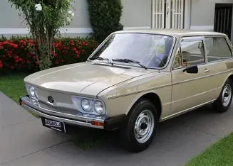

Brasília
Lançada em junho de 1973, a Volkswagen Brasília foi um marco da indústria automobilística brasileira, projetada localmente para ser um carro familiar, espaçoso e moderno, utilizando a mecânica confiável do Fusca. Com seu design de linhas retas e ampla área envidraçada, o hatchback se tornou um imenso sucesso de vendas, com mais de 1 milhão de unidades produzidas até 1982. A Volkswagen Brasília se destacou por suas características únicas que a tornaram um carro icônico. Aqui estão algumas das principais características do modelo:


Ficha técnica
- Design: Linhas retas e uma carroceria retilínea que conferem uma personalidade única e moderna.
- Espaço: Capacidade para acomodar cinco passageiros confortavelmente, com um amplo espaço interno.
- Ficha Técnica: Motor boxer de quatro cilindros e arrefecimento a ar, manual de 4 marchas, tração traseira e suspensão independente com barras de torção. Freios a tambor nas quatro rodas, com melhorias em algumas versões.
- Conforto: Acabamento interno em preto com piso cinza ou bege completo, mantendo o padrão dos modelos Volkswagen da época.
- Desempenho: Velocidade máxima de 132 km/h e aceleração de 0 a 100 km/h em 23 segundos.
Veja também um vídeo mostrando uma Brasília
Curiosidades
- Valorização: Hoje, a Brasília é um dos modelos mais valorizados pelos colecionadores de carros antigos no Brasil.
- Versões: A Brasília foi lançada em várias versões, incluindo uma versão a álcool com 49 cv em 1980.
- Motor: O motor da Brasília era o confiável boxer 1.6 refrigerado a ar, com 60 cv de potência, atingindo 100 km/h em 23 segundos e velocidade máxima de 132 km/h.
- Design: O design da Brasília foi inspirado na ideia de um carro com uma traseira com uma queda bem grande no estilo Fastback e bem largo, mas a proposta foi abandonada pela complexidade.